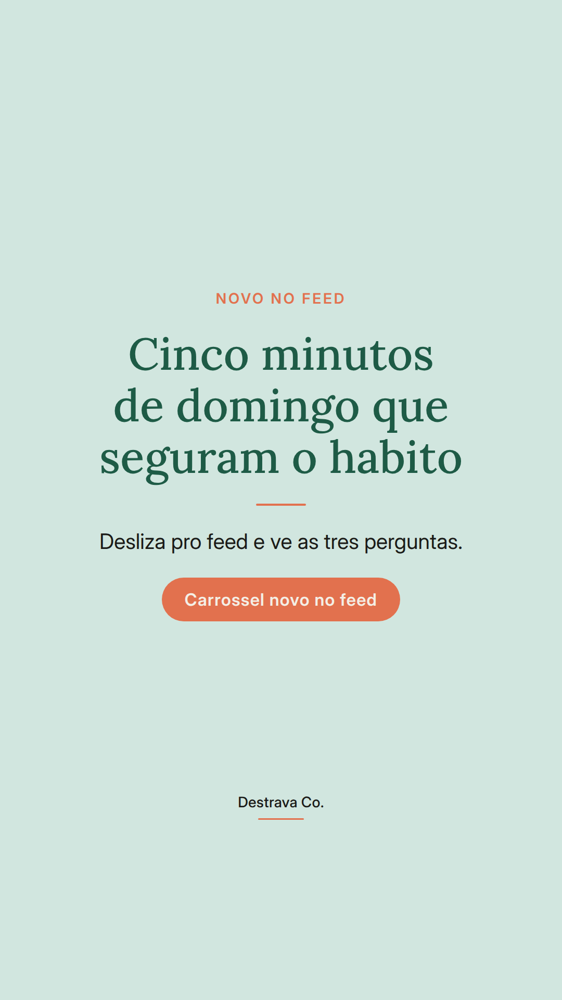
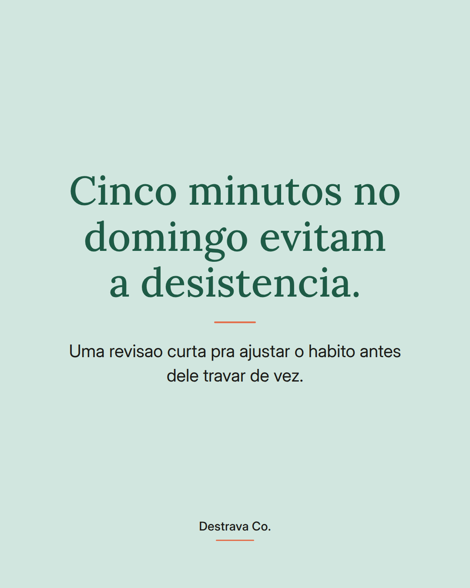
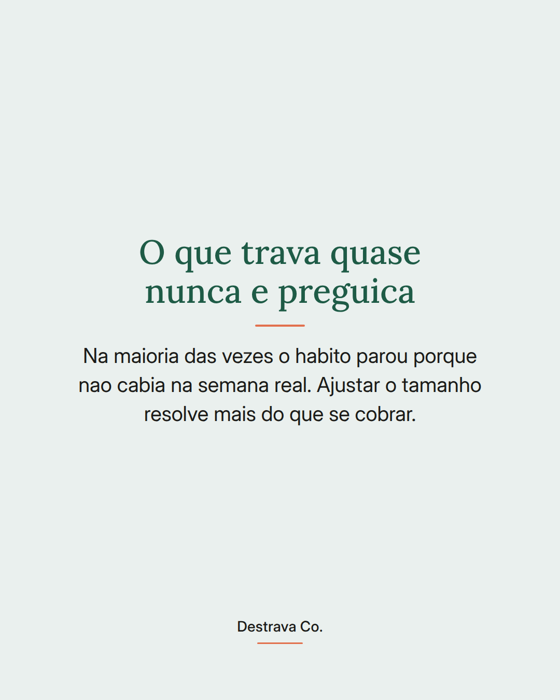
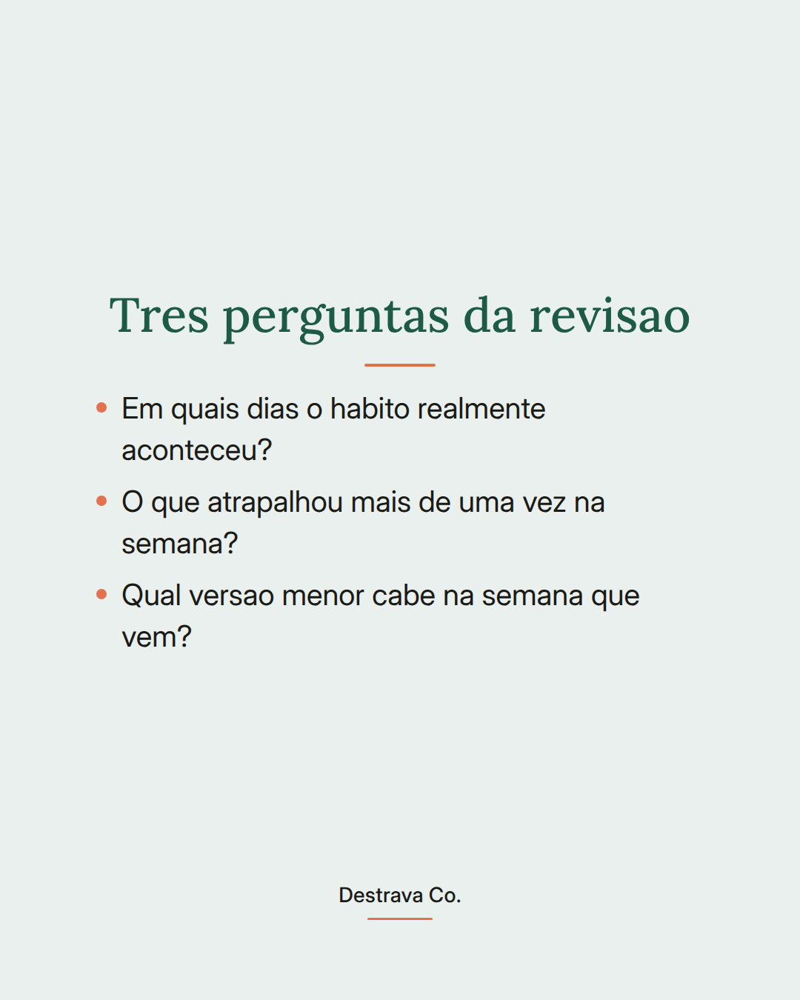
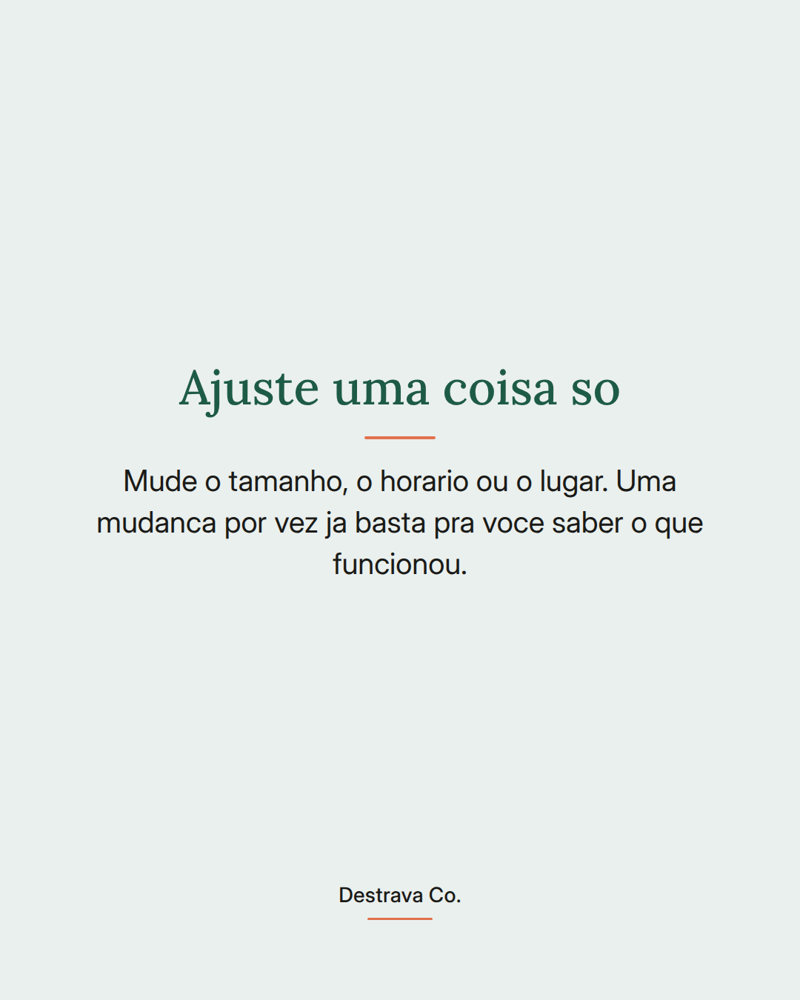
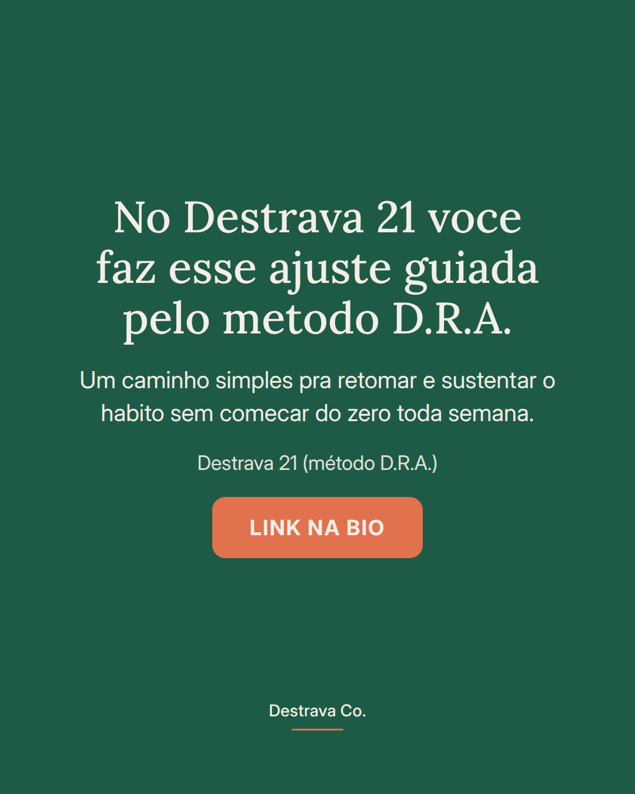

Constancia nao quebra de uma vez: ela trava numa semana que nao cabia.
Por isso a revisao de cinco minutos no domingo muda tanto. Em vez de esperar a proxima segunda pra recomecar com tudo, voce olha a semana que passou e pergunta em que dia o habito aconteceu de verdade, o que atrapalhou mais de uma vez e qual versao menor cabe nos proximos dias.
Depois disso, ajuste uma coisa so. O tamanho, o horario ou o lugar. Mudar tudo ao mesmo tempo confunde e voce nunca descobre o que estava funcionando.
E importante lembrar: semana ruim nao apaga o que voce ja construiu. Ela so mostra onde o plano estava apertado demais pra sua rotina.
Salva esse post pra abrir no proximo domingo e manda pra uma amiga que esta cansada de recomecar. Se quiser um caminho pronto pra isso, o Destrava 21 esta no botao do perfil.